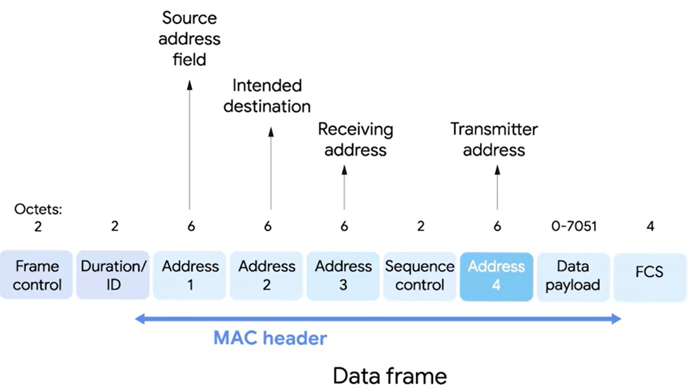

the 802.11 protocol operates at data link and physical layers
a set of common specification standard for the wireless communication network
there are different 802.11 standards that use the same protocol but might operate at different frequency band
(FM radio bands are 88 to 108 MHz)
WiFi network bands work on 2.4 and 5 GHz
the most common specs of 802.11x are: (x=...) b, a, g, n, ac (versions are listed by order of adoption)
newer versions allow higher speeds and more devices
the frame:
*Wireless access point- a device that bridges the wireless and wired portions of a network

Frame control -16bits, contains a number of subfields describing how the frame should be processed, include things like protocol version
Duration / ID - specifies how long the total frame is. So, the receiver knows how long it should expect to have to listen to the transmission
because of the use of multiple wireless access points there is a need for 4 address:
source address - MAC ad of the client device
intended destinationon (inside) the network
Receiving address - MAC address of the access point that is supposed to receive the frame
Transmitter address - MAC ad of the access point that have just transmitted the frame
most of the times the destination and receiving are the same and, the source and transmitter are also the same
sequence control field - 16bits to keep track of ordering of the frames
FCS - contains a checksum